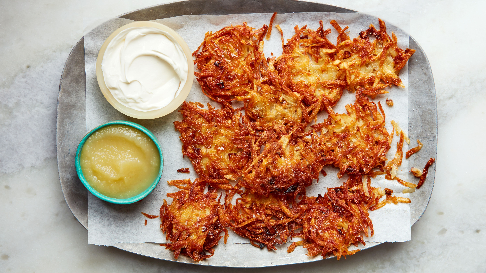

Latkes

Ingredients
- 3 medium russet potatoes, peeled
- 1 large egg, beaten, or more to taste
- 2 tablespoons all-purpose flour
- 1 tablespoon grated onion
- ½ teaspoon salt, or more to taste
- ¼ cup peanut oil for frying, or as needed
Steps
- Slice peeled potatoes and run through a food processor fitted with the grater attachment. Place shredded potatoes in a cheesecloth and wring, extracting as much moisture as possible.
- Measure 2 cups shredded, drained potatoes and place into a medium bowl; save any extra for another use. Add egg, flour, onion, and salt, and stir until well combined.
- Heat 1/4 inch of oil in a large, heavy-bottomed skillet over medium-high heat. Place large spoonfuls of potato mixture into the hot oil, pressing down on them to form 1/4- to 1/2-inch-thick patties. Cook until golden brown, 4 to 5 minutes. Flip and repeat on the other side.
- Remove to a paper towel-lined plate to drain while you cook any remaining latkes. Serve hot.
>>back